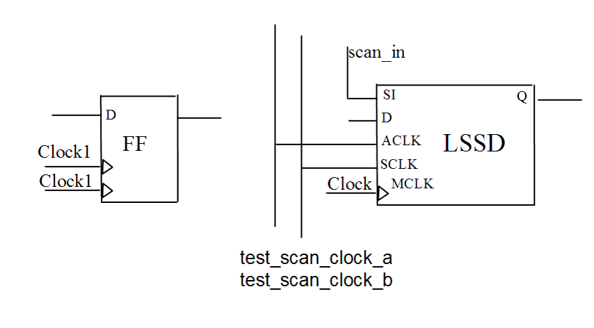

| Description | This rule fires when Leda detects multiple registers (flip-flops or latches) with more than one clock origin in the design. In some cases, you may want to limit such structures to improve timing analysis and synthesis results. |
| Policy | DESIGN |
| Ruleset | STRUCTURE |
| Language | VHDL/Verilog |
| Type | Hardware |
| Severity | Error |
This is an example of invalid Verilog code, followed by a circuit diagram that illustrates the problem:
module ntl_str58_top (Clock1, Clock2, Reset, Din, Dout);
input Clock1, Clock2, Reset, Din;
output Dout;
reg Dout;
always @(posedge Clock1 or posedge Clock2 )
// NTL_STR58 fires -- multiple clocks
begin
if(Reset)
Dout<= 0;
else Dout<= Din;
end
//LSSD -- Level-sensitive scan design
LSSD I0(.D(net_01), .SI(net1), .MCLK(Clock1), .ACLK(Clock1),
.SCLK(Clock2),.Q(net_02));
endmodule
